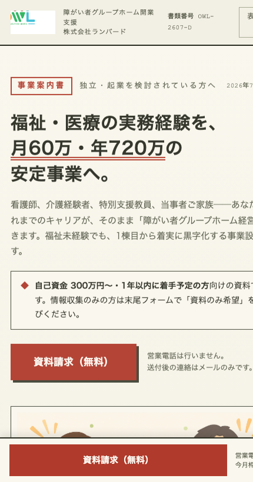

OWL 新LP（独立起業向け・資料請求）公開 承認依頼2026-07-22 ／ 星崎
新しく追加する「独立起業向けLP（資料請求）」の公開についてOKをいただきました。ありがとうございます。
これは現行の0円プランLPはそのまま（FVも変更なし）で、新規参入層向けのLPを1本"追加"するものです。公開前に「①キーワードの選定」「②予算」の2点だけ、鈴木さんにご確認・ご承認をお願いします。この2点の承認をいただいてから公開します。
① 2つのLPの棲み分け（現行は維持・新LPを追加）
現行・変更なし

① 現行「0円プラン」LP
障がい者GH経営に既に関心がある層（顕在層）。今のまま・FVも変えません。
今回 新規公開

② 新LP「独立起業向け」（資料請求）
福祉は未経験だが独立・起業したい層（新規参入層）。「福祉・医療の経験を月60万・年720万の事業へ」。
| 項目 | ① 現行0円プラン（維持） | ② 新LP 独立起業向け（公開予定） |
|---|---|---|
| ターゲット | 障がい者GH経営に既に関心がある層 | 福祉未経験だが独立・起業したい層 |
| 主キーワード | グループホーム経営／障がい者GH開業 | 福祉独立／起業福祉／介護独立 |
| FV訴求 | 加盟金0円で始めるGH経営 | 未経験から福祉で独立する |
新LPプレビュー：独立起業向け v5／配信URL予定：lp.owl-fukushi.net/202607dokuritsu/
② キーワードの選定（新LP用・新規参入層）
新LPは「福祉未経験で独立・起業したい層」を狙うため、現行LP（顕在層）とは別のワード群を使います。いずれもTO側で、河合さんのFC系ワードとは重複しません（owl-adsの除外KW整理で、これらは河合さん側が除外済み＝TO側の担当と確定しています）。
新LP用 狙いキーワード（TO・河合さん非重複）
福祉 独立介護 独立起業 福祉起業 介護
新キャンペーン名（案）：TO-OWL-Independence-Google-CP01（現行 TO-OWL-GH-Google-CP01 とは別キャンペーンで独立管理）
「開設」「開業」など具体的な展開ワードはキャンペーン設計時に追加、境界KW（例：不動産 福祉 投資）は週1の突き合わせで河合さんと確認のうえで足します。「フランチャイズ」系は河合さんの領域なので使いません。
③ 予算（新キャンペーン分・ご決定ください）
新LP用に新しいキャンペーンを1本立てるため、その日予算をいくらで始めるかご決定ください。
| キャンペーン | 状態 | 日予算 |
|---|---|---|
| TO-OWL-GH-Google-CP01（現行0円プラン） | 維持 | ¥13,333/日（現状） |
| TO-OWL-Independence-Google-CP01（新LP） | 新規 | 要ご決定（例：まず ¥3,000〜5,000/日 でテスト） |
まずは小さくテスト予算で始め、反応（資料請求の入り）を見てから増減する想定です。金額は鈴木さんのご決定・ご承認をいただいてから設定します。既存の予算総額を動かす場合も同様に事前確認します。
④ 公開までの流れ（このゲートを守ります）
🔒 ②キーワード・③予算の承認をいただくまで、新LPは公開しません
- 本シートで ②キーワード と ③予算 をご確認
- 鈴木さんの承認（キーワードOK・予算OK）
- 承認後にはじめて → 新LP「独立起業向け（資料請求）」を本番公開＋新キャンペーン配信開始
- 公開後は日次で数字（資料請求の入り）をご報告
※ 現行の0円プランLPはこの件では一切変更しません（FVもそのまま）。